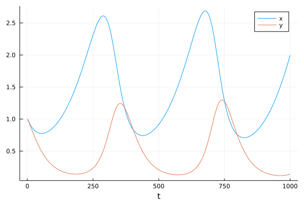

Ordinary Differencial equation
Differential equations are commonly used in science to describe many aspects of the physical world, ranging from dynamical systems, curves in space, to a complex multi-physics phenomena.
As an example, consider a simple non-linear ordinary differential equation:
\[\begin{align} \dot{x}&=\alpha x-\beta xy,\\\dot{y}&=-\delta y+\gamma xy, \end{align}\]
Which describes behavior of a predator-pray models in continuous times:
- x is the population of prey (sheep),
- y is the population of predator (wolfes)
- derivatives represent instantaneous growth rates of the populations
- $t$ is the time and $\alpha, \beta, \gamma, \delta$ are parameters.
Can be written in vector arguments $\mathbf{x}=[x,y]$:
\[\frac{d\mathbf{x}}{dt}=f(\mathbf{x},\theta)\]
with arbitrary function $f$ with vector of parameters $\theta$.
The first steps we may want to do with an ODE is to see it's evolution in time. The most simple approach is to discretize the time axis into steps: $t = [t_1, t_2, t_3, \ldots t_T]$ and evaluate solution at these points.
Replacing derivatives by differences:
\[\dot x \leftarrow \frac{x_t-x_{t-1}}{\Delta t}\]
we can derive a general scheme (Euler solution):
\[\mathbf{x}_t = \mathbf{x}_{t-1} + \Delta{}t f(\mathbf{x}_t,\theta)\]
which can be written genericaly in julia :
function f(x,θ)
α,β,γ,δ = θ
x1,x2=x
dx1 = α*x1 - β*x1*x2
dx2 = δ*x1*x2 - γ*x2
[dx1,dx2]
end
function solve(f,x0::AbstractVector,θ,dt,N)
X = hcat([zero(x0) for i=1:N]...)
X[:,1]=x0
for t=1:N-1
X[:,t+1]=X[:,t]+dt*f(X[:,t],θ)
end
X
endIs trivial but works:

Uncertainty propagation
Prediction of the ODE model is valid only if all parameters and all initial conditions are accurate. This is almost never the case. While the number of sheep can be known, the number of wolfes in a forest is more uncertain. The same model holds for predator-prey in insects where the number of individuals can be only estimated.
Uncertain initial conditions:
- number given by a probability distribution
- interval $[0.8,1.2]$ corresponds to uniform distribution $U(0.8,1.2)$
- gaussian $N(\mu,\sigma)$, with mean $\mu$ and standard deviation $\sigma$ e.g. $N(1,0.1)$
- more complicated distributins are more realistic (the number of animals is not negative!)
Ensemble approach
The most simple approach is to represent distribution by an empirical density = discrete samples.
\[p(x)\approx \frac{1}{K}\sum_{k=1}^{K} \delta(x-x^{(k)})\]
In the case of a Gaussian, we just sample:
K = 10
X0 = [x0 .+ 0.1*randn(2) for _=1:K]
Xens=[X=solve(f,X0[i],θ0,dt,N) for i=1:K](can be implemented more elegantly using multiple dispatch on Vector{Vector})
While it is very simple and universal, it may become hard to intepret. - What is the probability that it will higher than $x_{max}$?
- Improving accuracy with higher number of samples (expensive!)
Propagating a Gaussian
Propagation of uncertainty has been studied in many areas of science. Relation between accuracy and computational speed is always a tradeoff.
A common appoach to propagation of uncertainty is linearized Gaussian:
- variable $x$ is represented by gaussian $N(\mu,\sigma)$
- transformation of addition: $x+a\sim N(\mu+a,\sigma)$
- transformation of multiplication: $a*x\sim N(a*\mu,a*\sigma)$
- general transformation approximated:
\[g(x)\sim N(g(\mu),g'(x)*\sigma)\]
This can be efficienty implemneted in Julia:
struct GNum{T} where T<:Real
μ::T
σ::T
end
import Base: +, *
+(x::GaussNum{T},a::T) where T =GaussNum(x.μ+a,x.σ)
+(a::T,x::GaussNum{T}) where T =GaussNum(x.μ+a,x.σ)
*(x::GaussNum{T},a::T) where T =GaussNum(x.μ*a,a*x.σ)
*(a::T,x::GaussNum{T}) where T =GaussNum(x.μ*a,a*x.σ)For the ODE we need multiplication of two Gaussians. Using Taylor expansion:
\[g(x_1,x_2)=N(g(\mu_1,\mu_2), \sqrt{(dg/dx_1(\mu_1,\mu_2)\sigma_1)^2 + (dg/dx_1(\mu_1,\mu_2)\sigma_1)^2})\]
which trivially applies to sum: $x_1+x_2=N(\mu_1+\mu_2, \sqrt{\sigma_1^2 + \sigma_1^2})$
+(x1::GaussNum{T},x2::GaussNum{T}) where T =GaussNum(x1.μ+x2.μ,sqrt(x1.σ.^2 + x2.σ.^2))
*(x1::GaussNum{T},x2::GaussNum{T}) where T =GaussNum(x1.μ*x2.μ, sqrt(x1.σ.^2 + x2.σ.^2))
- TODO: can we make this more fancy? Automatic generation
Vector uncertainty
The approach above competely ignores the covariances between variables. While it is possible to do it linearnly in the same fashion, the approach suffer from a loss of precision under non-linearity.
A more sophisticated approach is based on decomposition of the covariance matrix
Manipulating ODEs
So far, we have considered first-order ODEs. Many ODEs are defined in higher order form, e.g.
- check Chris Raucausacc latest blog https://julialang.org/blog/2021/10/DEQ/